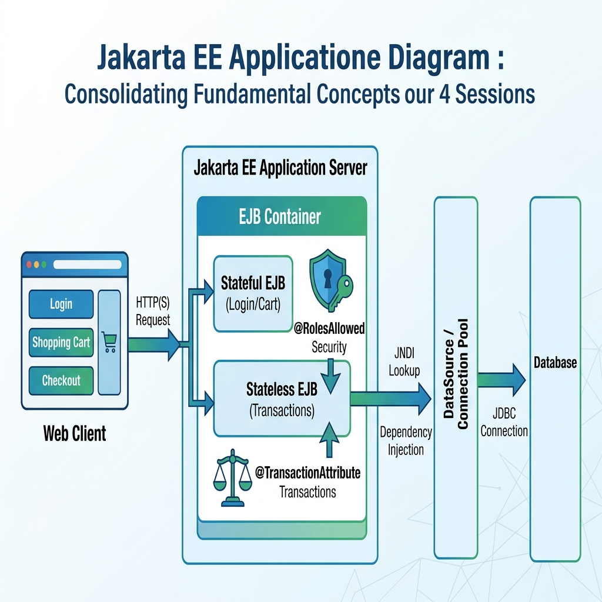

<title>Putting It Together</title>
<meta name="description" content="How the web layer, stateful and stateless beans, transactions, security and the database fit into one flow — and how to debug it.">
<link rel="stylesheet" href="assets/css/styles.css">
<script>window.PAGE = "08-review-integration";</script>

<main class="page">

  <h1>Unit 08 · Putting it together + debugging</h1>
  <p class="lede">Units 03–07 were separate pieces. Real applications stack them into one flow. This
    unit shows the stack, then teaches you to read the three errors you’ll hit most when they’re
    wired together.</p>

  <span class="eyebrow">concept</span>
  <h2>The integrated flow</h2>
  <figure>
    
    <figcaption><b>Takeaway:</b> the request travels down through layers, each adding one concern, and
      the answer travels back up.</figcaption>
  </figure>

  <ol>
    <li><strong>Web layer</strong> (servlet / JSF page) — receives the HTTP request. Finds a bean via
      injection or JNDI (Unit 05).</li>
    <li><strong>Stateful bean</strong> — holds this user’s conversation (cart, wizard). Remembers
      across calls (Unit 03).</li>
    <li><strong>Stateless bean</strong> — does the real work. Carries <code>@RolesAllowed</code>
      (Unit 07) and <code>@TransactionAttribute(REQUIRED)</code> (Unit 06).</li>
    <li><strong>Database</strong> — reached through the injected <code>DataSource</code> and its pool
      (Unit 05); the transaction commits or rolls back here.</li>
  </ol>

  <div class="code-head">One method, every layer</div>
  <pre><code>@Stateful
public class UserSessionCart {

    private List&lt;Double&gt; pending = new ArrayList&lt;&gt;();

    @Inject private PaymentProcessor processor;   // the stateless worker

    public void addPayment(double amount) { pending.add(amount); }   // remembers

    public String checkout() {
        for (double amount : pending) {
            processor.process(amount);            // joins its @RolesAllowed + @TransactionAttribute
        }
        pending.clear();
        return "checked out";
    }
}</code></pre>

  <span class="eyebrow">concept</span>
  <h2>The three errors you’ll actually hit</h2>

  <h3>1 · <code>NameNotFoundException</code> (JNDI)</h3>
  <p><em>Looks like:</em> <code>javax.naming.NameNotFoundException: GlobalBankApp/UserBean</code><br>
     <em>Means:</em> your lookup string doesn’t match a name WildFly registered.<br>
     <em>Fix:</em> right after deploy, search the WildFly console for <code>java:global</code> — it
     prints the exact name it gave your bean. Copy it verbatim (case-sensitive) into your
     <code>lookup()</code> or <code>@Resource(lookup=…)</code>.</p>

  <h3>2 · <code>EJBTransactionRolledbackException</code></h3>
  <p><em>Looks like:</em> <code>jakarta.ejb.EJBTransactionRolledbackException: Transaction rolled back</code><br>
     <em>Means:</em> something threw inside your business method, so the container rolled back — this
     exception is the <em>effect</em>, not the cause.<br>
     <em>Fix:</em> scroll down to <strong>“Caused by:”</strong>. That’s the real error — usually a
     <code>NullPointerException</code> or a <code>SQLException</code> (bad SQL, missing column). Fix
     that.</p>

  <h3>3 · <code>EJBAccessException</code></h3>
  <p><em>Looks like:</em> <code>jakarta.ejb.EJBAccessException: Invocation on method is not allowed</code><br>
     <em>Means:</em> a <code>@RolesAllowed</code> method was called by someone without the role — or
     not logged in at all.<br>
     <em>Fix:</em> make sure the web app forces a login and that the user’s role matches. While
     testing transaction logic only, you can temporarily comment out <code>@RolesAllowed</code>.</p>

  <div class="bench" data-run="canned">
    <div class="bench__head"><span class="dot"></span><span class="kind">try it</span><span class="mode">replay — reading a stack trace</span></div>
    <pre class="bench__code"><code>// You hit /Checkout and the browser shows an error. Here is the server log.
// Practise: which line is the REAL cause?</code></pre>
    <div class="bench__controls">
      <button class="btn-run" type="button">Run</button>
      <span class="bench__hint">Answer: the "Caused by: SQLException" line — a column name is wrong.</span>
    </div>
    <script type="text/plain" class="bench__canned">
ERROR [org.jboss.as.ejb3] jakarta.ejb.EJBTransactionRolledbackException: Transaction rolled back
    at ...InvocationContextInterceptor.processInvocation
    at com.globalbank.ejb.PaymentProcessor.process(PaymentProcessor.java:31)
    at com.globalbank.ejb.UserSessionCart.checkout(UserSessionCart.java:24)
Caused by: java.sql.SQLException: column "amont" does not exist   &lt;&lt;&lt; THE REAL BUG
    at org.postgresql.jdbc.PgStatement.executeInternal
    at com.globalbank.ejb.PaymentProcessor.process(PaymentProcessor.java:28)
    </script>
    <pre class="bench__out" aria-live="polite"></pre>
  </div>

  <div class="callout callout--tip"><span class="callout__i">💡</span>
    <div class="callout__b"><b>Stack-trace reading, always the same</b>
      1) Find the first line mentioning <em>your own package</em> — that’s where it blew up.
      2) Read every <strong>“Caused by:”</strong> from the bottom — the deepest one is the root.
      3) The top exception type is often just a wrapper. Unit 16 drills this further.</div>
  </div>

  <span class="eyebrow">concept</span>
  <h2>Before you run an integrated build</h2>
  <ul>
    <li>Is WildFly running? Is PostgreSQL running?</li>
    <li>Did you create the <code>GlobalBankDB</code> DataSource in the WildFly admin console (9990)?</li>
    <li>Does each bean have the right annotation — <code>@Stateless</code> vs <code>@Stateful</code>?</li>
    <li>Did the deploy actually succeed? Look for <code>Deployed "…​.war"</code>, not a stack trace.</li>
  </ul>

  <span class="eyebrow">check yourself</span>
  <section class="quiz" data-quiz>
    <h3>Check yourself</h3>
    <script type="application/json">
    [
      {"q":"Your servlet throws NameNotFoundException on a JNDI lookup. First thing to do?","opts":["Restart the database","Check the WildFly console after deploy for the exact java:global name it printed, and copy it verbatim","Rewrite the bean as stateful","Delete pom.xml"],"a":1,"why":"WildFly logs the real registered name. JNDI names are case-sensitive — match it exactly."},
      {"q":"EJBTransactionRolledbackException tells you...","opts":["The exact bug","That something else threw inside the method; the real error is under 'Caused by:'","That security failed","That the pool is empty"],"a":1,"why":"The rollback exception is a consequence. Read down to 'Caused by:' for the actual fault."},
      {"q":"In the sample log, the real bug is:","opts":["EJBTransactionRolledbackException","UserSessionCart.checkout line 24","Caused by: SQLException: column \"amont\" does not exist","PgStatement.executeInternal"],"a":2,"why":"A misspelled column name ('amont'). Everything above it is the wrapper chain."},
      {"q":"EJBAccessException most likely means:","opts":["Wrong Java version","The caller lacks the role required by @RolesAllowed, or isn't logged in","The bean doesn't exist","The transaction timed out"],"a":1,"why":"It's the container enforcing declarative security. Check login and role mapping."},
      {"q":"General rule for any stack trace:","opts":["Read only the top line","Find the first line in your own package, then read every 'Caused by:' from the bottom","Ignore 'Caused by:' lines","Count the lines"],"a":1,"why":"Your first frame shows where it failed; the deepest 'Caused by:' shows why."}
    ]
    </script>
  </section>

  <span class="eyebrow">recap</span>
  <h2>One-line summary</h2>
  <div class="tablewrap summary"><table><tbody>
    <tr><td>The stack</td><td>Web → stateful (conversation) → stateless (work + security + transaction) → DB (pool).</td></tr>
    <tr><td>NameNotFoundException</td><td>Wrong JNDI string — copy the exact name from the WildFly log.</td></tr>
    <tr><td>EJBTransactionRolledbackException</td><td>Read “Caused by:” — that’s the real fault.</td></tr>
    <tr><td>EJBAccessException</td><td>Missing role / not logged in.</td></tr>
    <tr><td>Trace rule</td><td>First line in your package + deepest “Caused by:”.</td></tr>
  </tbody></table></div>

</main>

<script src="assets/js/course.js"></script>
<script src="assets/js/runner.js"></script>
